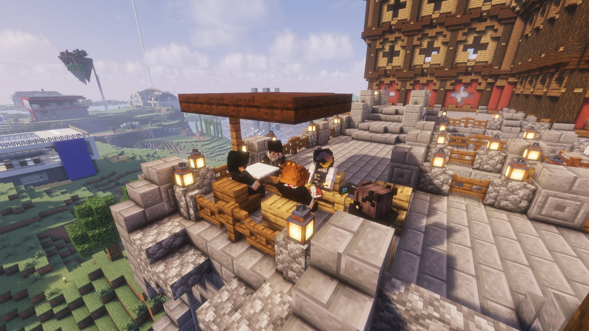
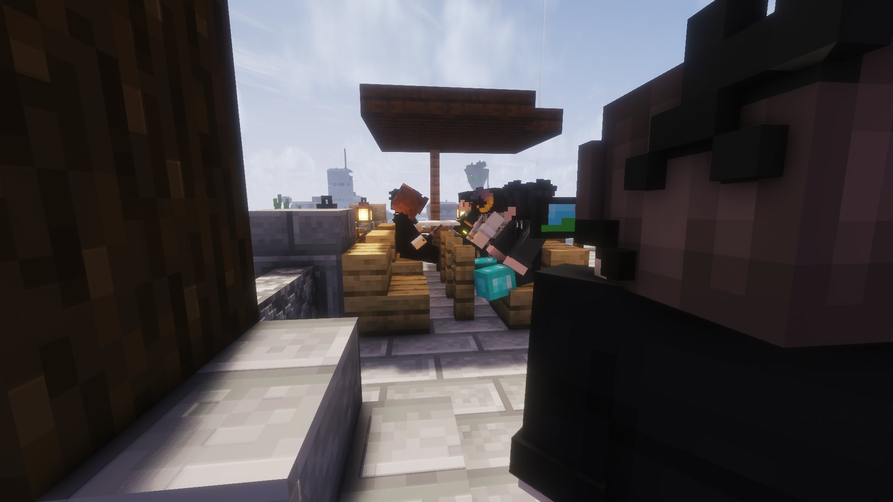
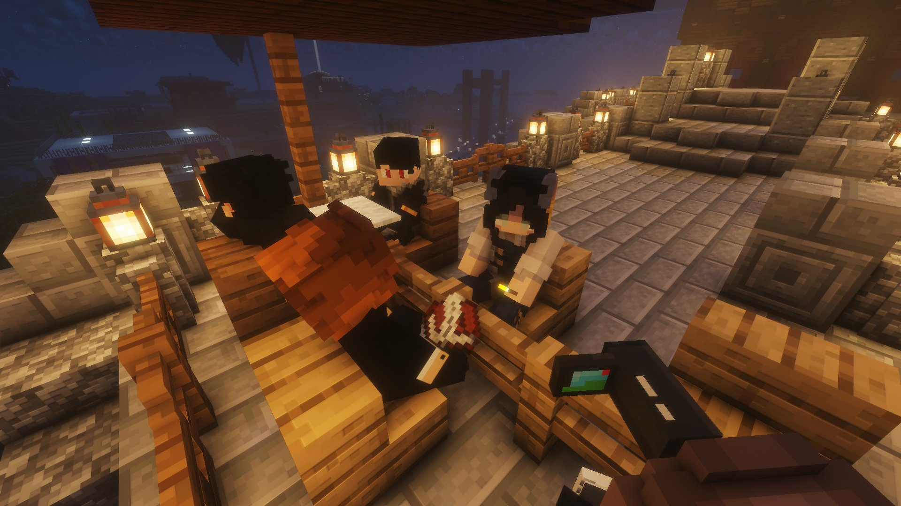

Enlèvement en pleine nuit : Dame Diane kidnappée, séquestrée et abandonnée en mer
C'est un récit glaçant que Dame Diane a accepté de confier en exclusivité au Karmine Déchaîné. Dans la nuit du 27 au 28 mai, cette figure respectée du territoire a été victime d'un enlèvement brutal et organisé, perpétré en plein cœur de sa propre demeure.

Tout commence dans la demeure de Dame Diane, en apparence calme ce soir-là. Son fidèle majordome discute avec des individus au rez-de-chaussée lorsque la situation bascule soudainement. Cinq individus masqués, vêtus de noir et arborant d'inquiétants masques de démon aux couleurs orange et rouge, font irruption dans les lieux. Le majordome est immédiatement mis en joue avec une arme tranchante, les tons montent, les menaces fusent. Dame Diane, descendue accueillir ses visiteurs, se retrouve piégée.
Sans lui laisser le temps de réagir, les ravisseurs l'emmènent dans une pièce, lui posent une cagoule sur la tête et la font sortir par la cour arrière de la résidence. Un seul mot d'ordre, martelé sans relâche par ses geôliers : "Pas bouger."

Une traversée cauchemardesque vers l'inconnu
Poussée sans cesse, interdite de parole, Dame Diane est conduite dans la nuit le long de la côte, par un chemin sombre et isolé en direction de l'est. Au bout de ce trajet angoissant, une chute : elle est précipitée dans un trou profond, atterrissant dans une eau poisseuse et sombre.
L'endroit qui lui sert de prison est un véritable cauchemar — délabré, couvert de mousse et de lianes, avec des traces de sang sur les murs et des cages visibles dans l'ombre. Un lieu visiblement connu de ses ravisseurs, soigneusement préparé pour retenir leurs victimes.
La captivité — entre menaces et désorganisation
Durant sa séquestration, Dame Diane rapporte des moments aussi terrifiants que surréalistes. Une tentative de lui faire consommer des substances empoisonnées est à déplorer. Les ravisseurs, bien que menaçants, se révèlent rapidement désorganisés et peu cohérents dans leurs agissements.
Un seul d'entre eux semble tenir les rênes : un chef à l'allure imposante, charismatique, qui observe la scène les bras croisés sans se salir les mains. C'est lui qui commande, lui qui décide. Dame Diane, femme de caractère, n'hésite pas à qualifier l'ensemble du groupe de "brigands de pacotille" — un jugement sévère, mais difficile à contester au regard des événements.
Les ravisseurs auraient également glissé une menace inquiétante pour l'avenir : ils comptent récidiver lors de l'ouverture de nouveaux commerces sur le territoire. Un avertissement que le Karmine Déchaîné prend très au sérieux.
La négociation — Dame Diane tient bon
Loin de se laisser intimider, Dame Diane engage une négociation avec ses ravisseurs et parvient, par son sang-froid, à faire descendre la rançon à seulement 5 KCoins — une somme dérisoire qui en dit long sur le manque de professionnalisme de ces criminels.

L'abandon en mer — un épilogue brutal
Une fois l'affaire conclue, Dame Diane est recagoulée et séparée des autres dans des bateaux. Le ravisseur qui la prend en charge est décrit comme jeune et farouche. Sans cérémonie, elle est tout simplement jetée en pleine mer, à plus d'un kilomètre de la rive, livrée à elle-même.
C'est à bord d'une barque de fortune qu'elle réussit à regagner le rivage, trouvant refuge chez M. Pablo. Épuisée, mais saine et sauve.
"Dame Diane a survécu grâce à son courage et son intelligence. Ses ravisseurs, eux, n'ont pas fini d'entendre parler d'eux."
— La Rédaction
Le Karmine Déchaîné condamne avec la plus grande fermeté cet acte criminel odieux. Nous appelons les autorités à agir, et les citoyens à la vigilance. L'enquête est en cours.